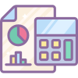

Controle de Despesas
Mantenha um registro de todos os seus gastos para identificar áreas de economia.
O orçamento ajuda você a controlar suas finanças e planejar o futuro. Aprenda a criar e seguir um orçamento.
Importante: Acompanhe suas despesas regularmente para evitar gastos excessivos.
Em 2025, a tecnologia oferece diversas ferramentas digitais para facilitar o controle do orçamento, como aplicativos de finanças pessoais que sincronizam com suas contas bancárias e cartões. Estabelecer metas financeiras claras e revisar seu orçamento mensalmente são práticas essenciais para manter a saúde financeira.
Além disso, reservar uma parte da renda para emergências e investimentos é fundamental para garantir estabilidade e crescimento financeiro.

Mantenha um registro de todos os seus gastos para identificar áreas de economia.
Estabeleça metas financeiras claras para manter a motivação e o foco.
Prepare-se para despesas futuras e emergências com um plano sólido.